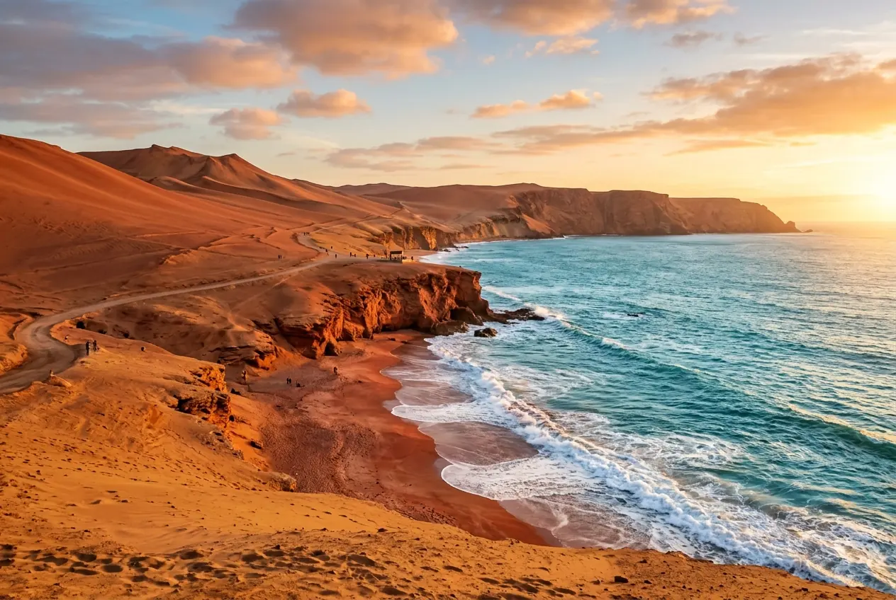
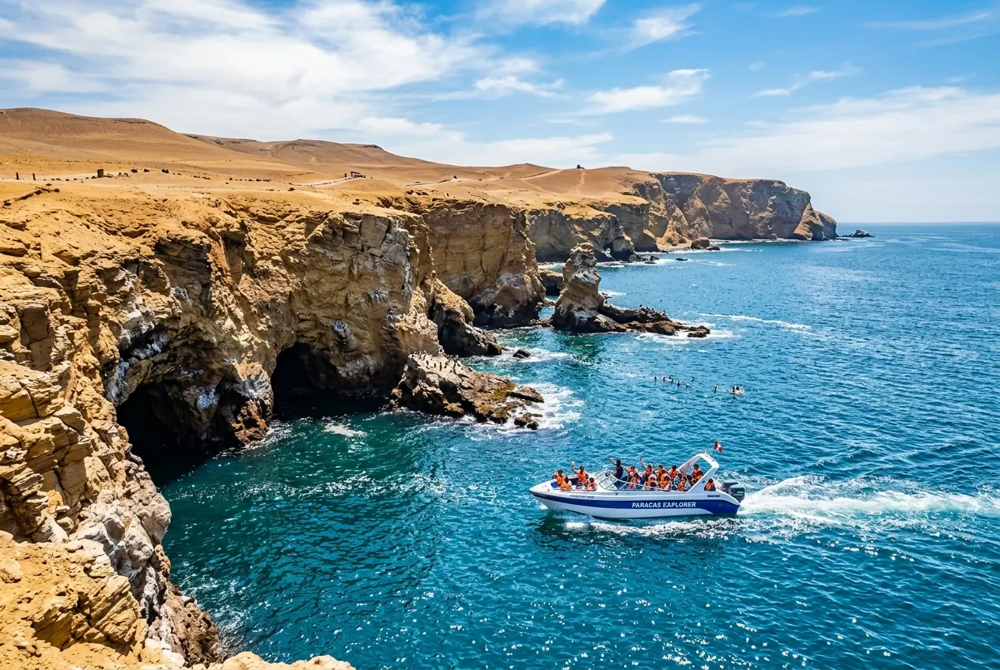
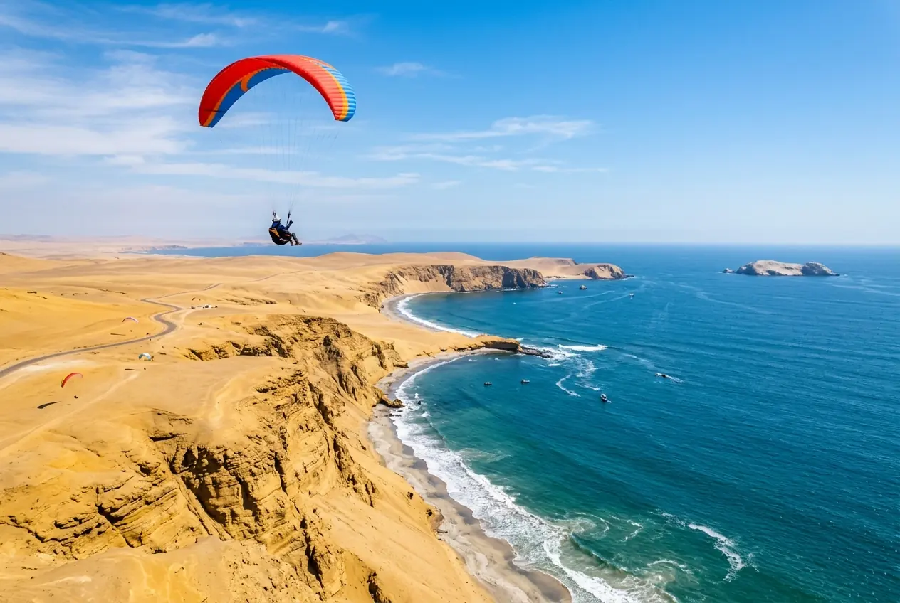
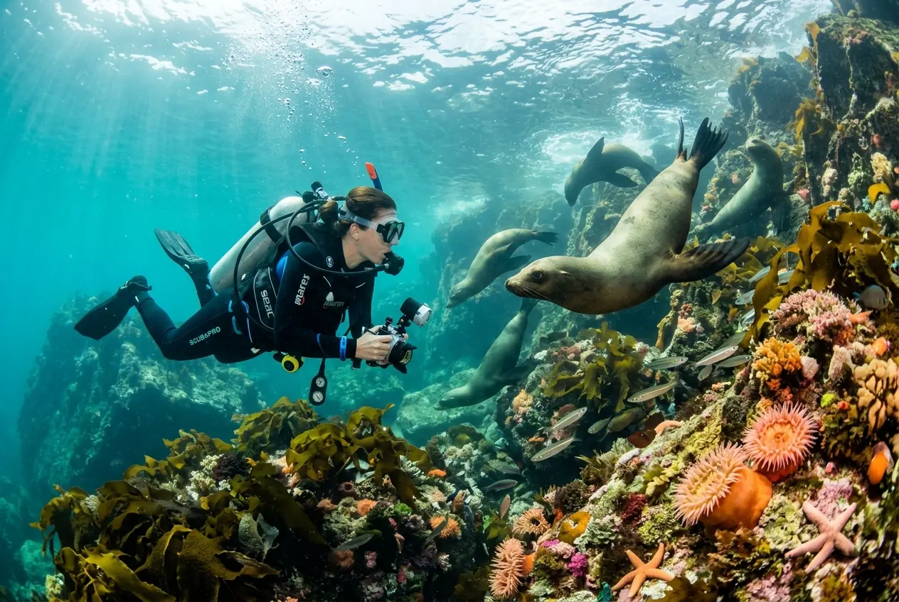
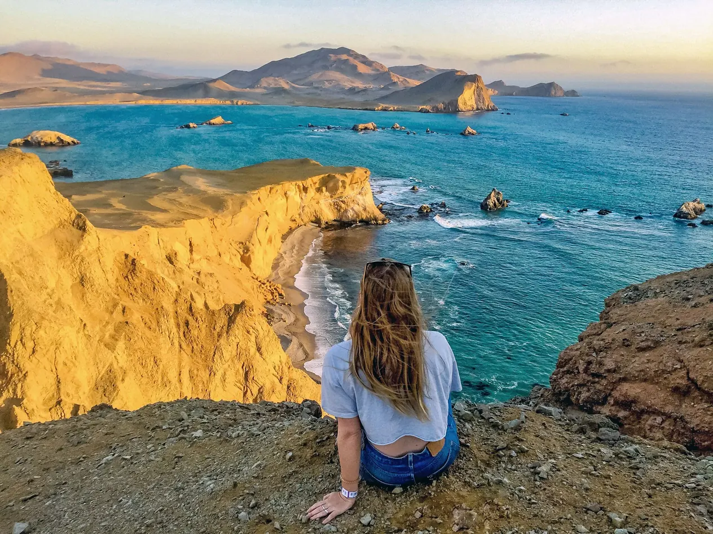
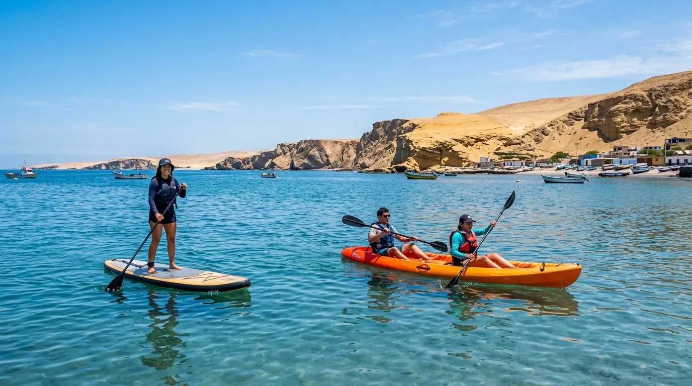
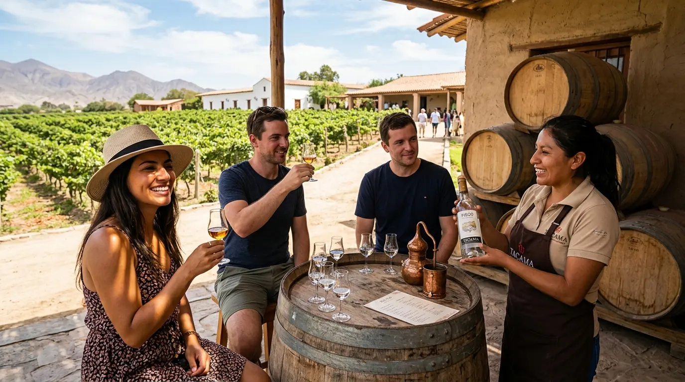

Tours en Paracas, del desierto al mar
Islas Ballestas, Reserva Nacional, buceo y parapente con guías certificados. Reserva directa por WhatsApp.
Mejores actividades de aventura en Paracas
Seleccionamos las mejores rutas y actividades para garantizarte una experiencia auténtica con guías certificados.

Tour Islas Ballestas
desde S/ 80Navega por las "Galápagos peruanas" y observa lobos marinos, pingüinos de Humboldt y aves silvestres.
Reserva Nacional de Paracas
desde S/ 50Explora acantilados de colores, dunas y playas únicas como Playa Roja donde el desierto se une con el mar.

Full Day Paracas
desde S/ 120El tour clásico definitivo: visita las Islas Ballestas por la mañana y la Reserva Nacional de Paracas al mediodía.

Vuelo en Parapente
desde S/ 250Sobrevuela la majestuosa costa de Paracas y siente la libertad de volar en tándem con un piloto profesional.

Buceo (Scuba Diving)
desde S/ 480Iníciate en el mundo submarino con instructores PADI certificados en la biodiversa costa de Paracas.

Golden Shadows Trek
desde S/ 120Camina entre acantilados milenarios del desierto de Paracas y disfruta del atardecer más dorado frente al océano.

Buggies y Sandboard en Huacachina
desde S/ 70Siente la adrenalina pura recorriendo dunas gigantes de arena en carros tubulares y deslizándote en tablas al atardecer.

Kayak y Paddle en la Bahía
desde S/ 60Rema en aguas mansas al amanecer, con avistamiento cercano de aves marinas y lobos en su hábitat.
Yakupark Water Park
desde S/ 50Diviértete en grande deslizándote en el parque acuático inflable más grande de Sudamérica en plena bahía.

Ruta del Pisco en Ica
desde S/ 80Visita viñedos tradicionales y artesanales en el valle del pisco, con catas guiadas y la mejor gastronomía criolla.
SolyMar Paracas, tu agencia de confianza
En SolyMar Paracas, no solo organizamos excursiones; diseñamos aventuras memorables que respetan y celebran el ecosistema único de nuestra bahía. Somos una agencia local con años de trayectoria guiando a viajeros de todo el mundo.
Nuestro compromiso es ofrecerte un servicio de alta calidad con tarifas transparentes y sin comisiones sorpresa. Trabajamos de la mano con guías autorizados por el SERNANP y DIRCETUR, garantizando paseos educativos, seguros y respetuosos con las especies marinas protegidas de las Islas Ballestas y la Reserva Nacional de Paracas.
-
Seguridad garantizada
Equipos modernos, chalecos salvavidas certificados y pólizas de seguro de pasajeros vigentes.
-
Agencia formal y certificada
Operador turístico formal con todos los permisos y licencias oficiales del Ministerio de Turismo.
-
Tours personalizados
Adaptamos cada ruta y horario a tus necesidades de viaje para una aventura exclusiva.
Lo que dicen nuestros aventureros
“Increíble experiencia de buceo. Los instructores son muy profesionales y me sentí seguro en todo momento. ¡Altamente recomendado!”
“El Golden Shadows Trek fue lo mejor de mi viaje a Perú. El paisaje al atardecer es algo que nunca olvidaré.”
“Excelente servicio desde el primer contacto por WhatsApp. Todo muy organizado y puntual.”

Guía de viaje a Paracas
Todo lo que necesitas saber antes de empacar y visitar el desierto y el mar de Paracas.
Mejor época para viajar
Paracas tiene sol casi todo el año con escasas lluvias. La mejor temporada para disfrutar de las playas y el mar es de diciembre a abril (verano). En agosto y septiembre aumentan los vientos locales ("viento Paracas"), pero los tours operan normalmente en las mañanas.
Cómo llegar desde Lima
Los buses interprovinciales (Cruz del Sur, Oltursa, Peru Hop) conectan Lima con Paracas en un viaje de 3.5 a 4 horas por la carretera Panamericana Sur. Si vas hacia Ica, Huacachina o Nasca, Paracas es la parada intermedia perfecta de tu ruta de viaje.
Gastronomía marina local
Al ser una zona costera con corrientes ricas en plancton, pescados y mariscos son increíblemente frescos. No te vayas sin probar un Ceviche de pescado, un Tiradito o un Arroz con Mariscos en el boulevard o en la pintoresca caleta Lagunillas.
Preguntas frecuentes
Resolvemos todas tus dudas sobre reservas, logística, actividades y seguridad en Paracas.
Información General y Reservas
¿Cómo reservo un tour y cuáles son los métodos de pago?
Las reservas se coordinan directamente por WhatsApp de manera rápida y segura. Aceptamos pagos mediante Yape, Plin, transferencias bancarias a cuentas locales (BCP, Interbank) y tarjetas de crédito o débito mediante enlace de pago seguro. No cobramos cargos sorpresa.
¿Con cuánta anticipación debo realizar mi reserva?
Recomendamos reservar con al menos 48 horas de anticipación, especialmente en temporada alta (enero a abril) o para actividades con cupos diarios limitados como el buceo, vuelo en parapente y el trekking Sombras Doradas.
¿Qué ocurre en caso de mal clima o cierre de muelle?
La seguridad es lo primero. Si la Capitanía de Puerto cierra el muelle El Chaco por oleaje anómalo o vientos fuertes (afectando la salida a Islas Ballestas), coordinaremos de inmediato para reprogramar tu tour en el siguiente turno disponible o realizaremos la devolución del 100% de tu dinero sin cargos administrativos.
¿Cuáles son las políticas de cancelación y reembolso?
Puedes reprogramar o cancelar tu reserva sin ninguna penalización avisando con un mínimo de 24 horas antes del horario del tour. Las cancelaciones de último minuto o inasistencias (no-show) están sujetas a la pérdida del depósito de garantía.
¿Ofrecen servicio gratuito de custodia de equipaje?
¡Sí! Contamos con una oficina céntrica en Paracas. Si llegas temprano en bus y tu habitación de hotel aún no está disponible, o si haces tu tour antes de partir hacia Ica/Lima, guardamos tus maletas de manera totalmente gratuita y segura.
Islas Ballestas y Reserva Nacional
¿Qué impuestos o entradas se deben pagar y cómo funcionan?
Para realizar el tour a las Islas Ballestas se pagan S/ 16 por persona (tasa de embarque e ingreso SERNANP). Para la Reserva Nacional de Paracas, el ingreso cuesta S/ 11. Si vas a realizar ambas actividades, te recomendamos comprar el Boleto Combinado por S/ 22 (válido por 2 días), lo que te ahorrará dinero. Los menores de edad pagan tarifa reducida (50%).
¿Se puede desembarcar en las Islas Ballestas o nadar con los lobos marinos?
No. Las Islas Ballestas forman parte de la Reserva Nacional Sistema de Islas, Islotes y Puntas Guaneras, una zona estrictamente protegida. El recorrido se realiza en lanchas modernas rodeando las islas sin desembarcar, a una distancia segura para conservar la fauna. Para nadar en el mar y ver fauna de cerca, te recomendamos nuestro tour de Buceo.
¿Qué debo llevar para los tours de Islas Ballestas y la Reserva?
Para las Islas Ballestas, es imprescindible una casaca cortavientos o abrigo, ya que en mar abierto corre viento frío. Para la Reserva Nacional de Paracas (tour terrestre), te recomendamos ropa cómoda, calzado cerrado, lentes de sol, gorra o sombrero con ajuste y bloqueador solar.
Deportes de Aventura y Actividades
¿Necesito experiencia previa o saber nadar para el buceo?
Para el Buceo (Scuba Diving), ofrecemos el programa "Bautismo PADI" o Discover Scuba Diving, ideal para principiantes absolutos. No requieres experiencia previa, ya que irás acompañado uno a uno por un instructor certificado bajo el agua.
¿Es seguro volar en Parapente en el desierto de Paracas?
Es 100% seguro. Volarás en parapente tándem junto a un instructor certificado con amplia experiencia y equipamiento homologado. El vuelo depende estrictamente de las corrientes de viento adecuadas. Si las condiciones no son seguras, la actividad se pospone o se cancela con reembolso completo.
¿Los vehículos de aventura (buggies) son seguros?
Absolutamente. En SolyMar operamos únicamente con vehículos areneros (tubulares) formales que cuentan con revisiones técnicas periódicas, jaulas antivuelco reforzadas, arneses de seguridad de 4 puntos y choferes profesionales autorizados con años de experiencia en las dunas de Ica y Paracas.
¿Cuál es el nivel de dificultad para el Trekking de Golden Shadows?
El trekking tiene un nivel de dificultad moderado-bajo. Consiste en una caminata guiada de aproximadamente 2 horas por senderos del desierto y bordes de acantilados en la Reserva Nacional. Recomendado para toda la familia y niños a partir de 8 años. Es indispensable llevar calzado deportivo con buen agarre.
Logística y Transporte
¿Cómo puedo llegar a Paracas desde Lima o Ica?
Desde Lima, la opción más popular y cómoda es tomar buses interprovinciales (como Cruz del Sur) hacia la estación de Paracas (aproximadamente 3.5 a 4 horas de viaje). Desde Ica, el trayecto toma alrededor de 1 hora y 20 minutos. Ofrecemos también traslados privados puerta a puerta y vehículos climatizados para mayor comodidad.
¿Los tours son compartidos o en servicio privado?
Ofrecemos ambas alternativas. Las salidas en lancha a Islas Ballestas y los buggies en Huacachina se realizan en servicio compartido en embarcaciones y vehículos amplios. Los paseos terrestres a la Reserva de Paracas, el buceo, el trekking y el transporte personalizado pueden reservarse de forma privada para una experiencia exclusiva a tu propio ritmo.
Consejos y guías para tu viaje
Guía completa de las Islas Ballestas 2026
Todo sobre precios, tasas del muelle, horarios recomendados y qué fauna ver en el tour.
3 formas seguras de llegar a Paracas desde Lima
Descubre las opciones más cómodas y seguras para viajar de Lima a Paracas en bus, auto privado o tour compartido.

Circuito de la Reserva Nacional de Paracas: en moto, bicicleta o caminando
Mapa interactivo y guía punto por punto para recorrer la reserva por tu cuenta.
Reserva tu aventura hoy
Contáctanos ahora y reserva tu tour personalizado en Paracas al mejor precio con seguridad garantizada.
Reservar por WhatsApp